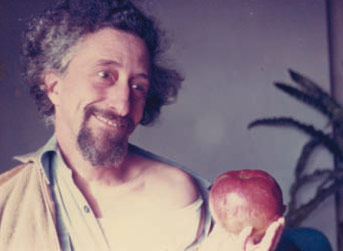

Cenni biografici

Giovanni Profumo è nato a Genova nel 1935.
Gli studi classici lo segneranno profondamente; dopo aver frequentato, nell’immediato dopoguerra, lo studio di Paolo S. Rodocanachi, uno dei più importanti pittori liguri, trova presto un proprio percorso espressivo.
Negli anni ’50 la forte impronta ligure è riconoscibile nei paesaggi, ispirati alla sua terra, mai copiati ma sempre reinventati.
Negli anni ’60 è interessato a una sorta di astrazione nel cui impianto è tuttavia ancora presente il ricordo del figurativo. Nella sua pittura si delinea pertanto un personale stile geometrico, espresso su tela attraverso la pittura ad olio impiegata con spatola. Nel frattempo Profumo si dedica anche alla produzione di ceramiche presso la fabbrica albisolese “Pozzo Garitta” ed è presente con un grande pannello in ceramica all’esposizione di Torino “Italia ’61’.
Negli anni ‘70, oltre al paesaggio, cui ritorna arricchendolo con le esperienze precedenti, racconta polemicamente ma con e poesia la propria visione della modernità. La RAI gli dedica nel 1971 un servizio in “Cronache italiane”. Accanto all’olio, sempre prediletto, troviamo opere a tempera, disegni a pastello ed alcuni affreschi a soggetto figurativo. Senza abbandonare la pittura, Profumo realizza piani del colore per edifici e quartieri antichi in corso di ristrutturazione, fra cui progetti per il Comune di Genova, come Galleria Mazzini, e il recupero della Tonnara dell’Isola Piana, in Sardegna. Infatti, vero maestro del colore, ha dimostrato in questo campo la sua profonda conoscenza della bella tradizione cromatica caratteristica della Liguria, rielaborata sapientemente di volta in volta nel rispetto dell’ambiente circostante.
Negli ultimi anni di vita e di lavoro Profumo approfondisce sempre più rigorosamente la propria ricerca sul colore e sulla luce, rarefacendo e la forma in quelli che, con umiltà antica, continuerà a chiamare "paesaggi". I “paesaggi” di Giovanni Profumo sono tanto esercizi di pura pittura così come necessità di pervenire a una sorta di rappresentazione interiore.
Il pittore è morto prematuramente nel 1997.